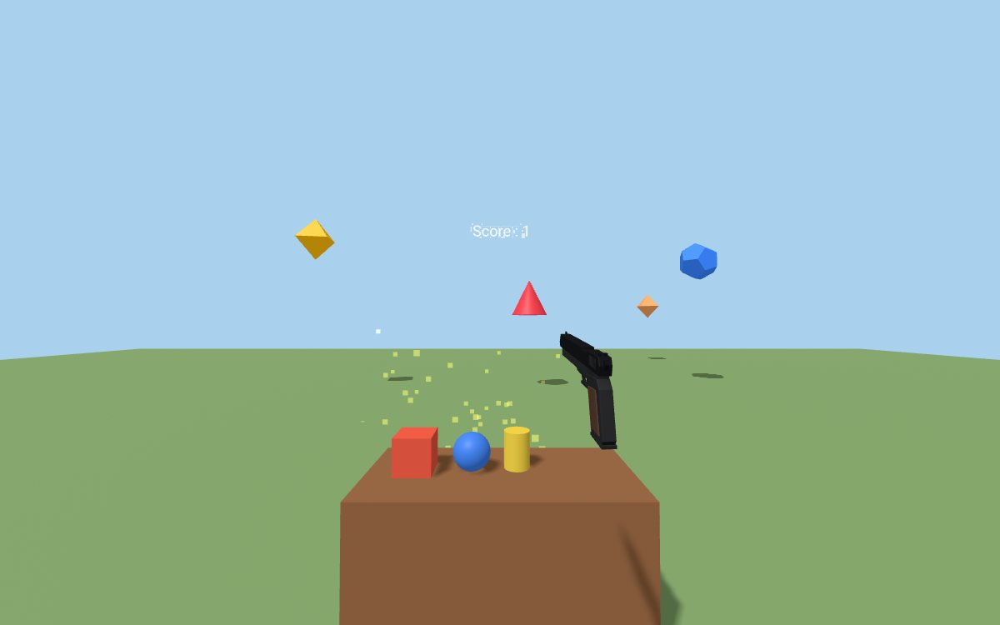
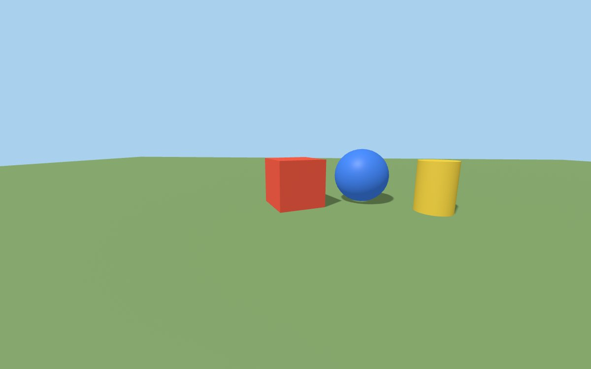
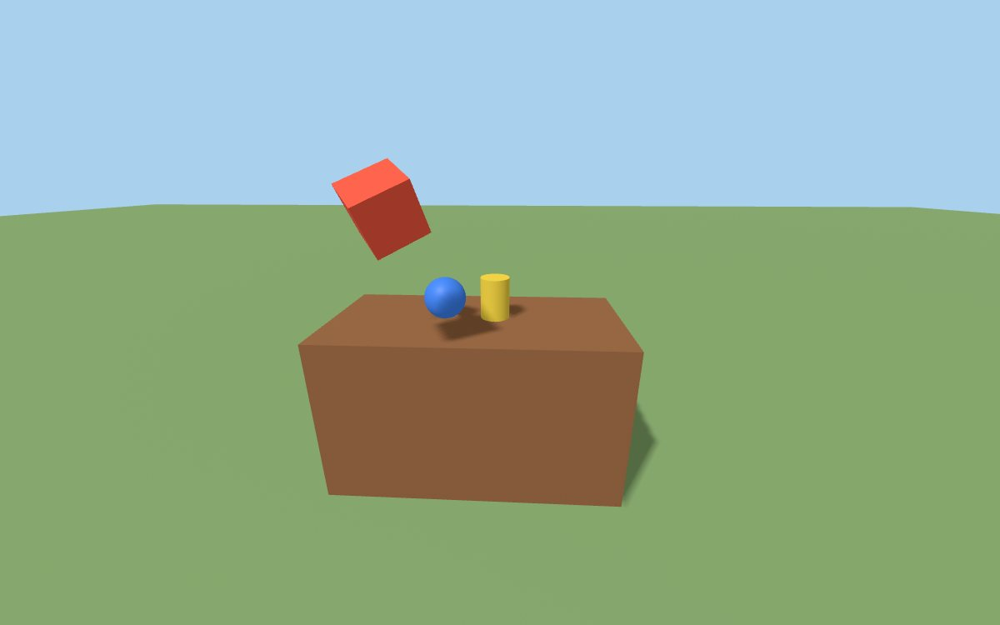
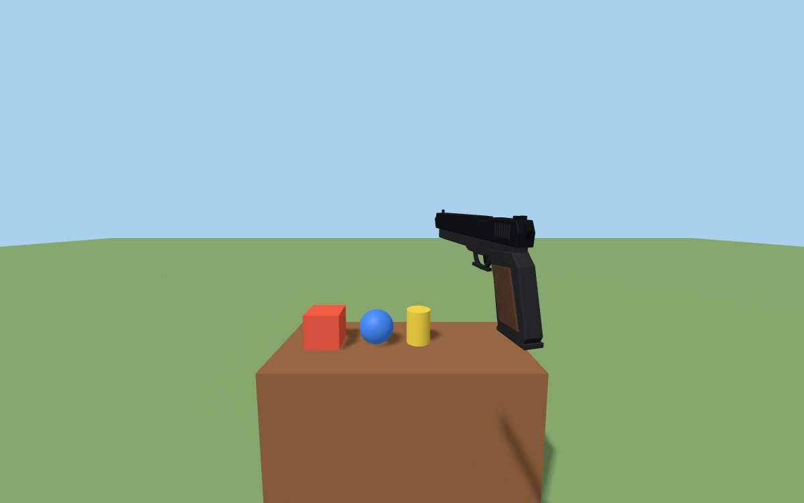
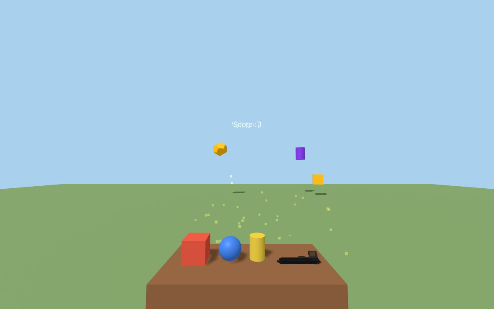

ST2AWD · Interface development & web design · Efrei I2
Une petite scène VR qu'on construit en quatre étapes : se déplacer, attraper des objets, tirer, puis toucher des cibles.
Amine GADDAS, septembre 2026

Chaque fichier reprend le précédent et ajoute une couche. On peut donc ouvrir directement le dernier pour tout tester, ou suivre l'ordre pour voir le code grandir.
Un sol, un cube, une sphère et un cylindre. Une lumière directionnelle projette les ombres, une lumière ambiante débouche les zones sombres.

Les objets sont posés sur une table et ont un corps physique. Le bouton grip attrape l'objet le plus proche de la main, qui la suit tant qu'on serre.

Un modèle 3D de pistolet se saisit comme les autres objets, mais se place dans la main avec une pose fixe. La gâchette tire une balle depuis la bouche du canon.
gun.
Des cibles de formes variées apparaissent au hasard devant le joueur toutes les 2,5 secondes, six au maximum. Une balle qui en touche une la fait éclater.
collide, doublé d'un rayon entre deux images pour les balles rapides.
Pensé pour les manettes Meta Quest (Oculus Touch). Les manettes Vive et Windows Mixed Reality sont déclarées aussi.
| Action | Casque VR | Navigateur, sans casque |
|---|---|---|
| Se déplacer | Stick gauche | Z Q S D ou flèches |
| Tourner | Stick droit, gauche ou droite | Cliquer-glisser à la souris |
| Attraper, lâcher | Grip (appuyer, relâcher) | Non disponible |
| Tirer | Gâchette, pistolet en main | F tire depuis la caméra (exercices 3 et 4) |
Il faut un petit serveur local : ouvert en file://, le navigateur refuse de charger pistolet.glb. Le pistolet s'affiche alors en version simplifiée faite de primitives.
cd TP3 npx http-server -p 8080
L'extension Live Server de VS Code fait la même chose.
Sur le casque, WebXR n'accepte que https ou localhost. Le plus simple est de brancher le Quest en USB et de rediriger le port :
adb reverse tcp:8080 tcp:8080
Puis ouvrir http://localhost:8080 dans le navigateur du Quest et appuyer sur le bouton VR en bas à droite.